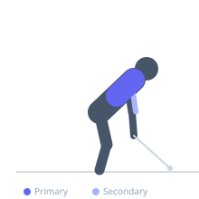

Exercise guide / Plate-Loaded Machine Row — Low Row
Plate-Loaded Machine Row — Low Row
The plate-loaded low row machine targets the lower lats and mid-back through a horizontal pulling path at approximately waist height. The low cable angle maximizes latissimus dorsi engagement compared to a high row configuration. The chest-supported position allows trainees to train to muscular failure safely without lower back fatigue limiting back muscle training.
Primary muscles
latissimus dorsi
rhomboid major
Secondary muscles
trapezius middle
biceps brachii long head
teres major
Stabilizers
trapezius lower
Equipment
Weight Plates


Starting position
- Sit facing the machine with the chest on the pad. Set the seat so the handles are at approximately waist-to-lower-chest height. Grip the handles with arms fully extended.
Setup
- Load the machine with appropriate weight. The low angle maximizes lat stretch at the start.
Steps
- Step 1: Sit with chest on the support pad, arms fully extended gripping the handles.
- Step 2: Retract the scapulae and pull the handles toward the lower chest or abdomen.
- Step 3: Keep the elbows close to the torso to maximize lat activation.
- Step 4: Squeeze the lats at peak contraction.
- Step 5: Return under control to full extension.
Coaching cues
- Elbows stay close
- Think about pulling the elbows to your pockets
- Full stretch at the start of every rep
Breathing
- Exhale on the row, inhale on the return.
Range of motion
- Full extension at the start to handles at lower ribcage level at the finish.
Tempo
- 2-1-3-0
Common mistakes
- Flaring the elbows too wide, shifting to a rhomboid-dominant movement
- Using too much weight, reducing range of motion
Safety
- Check chest pad height before loading heavy — improper fit causes shoulder discomfort
Training
- strength: 6–10 reps
- hypertrophy: 10–15 reps
- strength: 3–4 sets
- hypertrophy: 3–4 sets
- Rest: {'strength': 120, 'hypertrophy': 90}